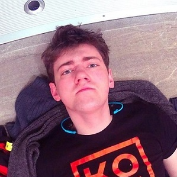

Тур в Карпаты из Днепропетровска
25.06.2015 - 28.06.2015
Днепропетровск Карпаты Днепропетровск
Описание
Стоимость:
295 $ 275 $ — проживание в 5ти местных номерах ( с удобствами)
375 $ 375 $ — проживание в 2х местных номерах ( с удобствами)
Тип тура: Семейный отдых, бизнес отдых
Транспорт: Автобус
Дополнительные услуги: Заказ экскурсий, оренда машины, дайвинг
Количество участников: 50 (Осталось 9 мест)Если у Вас есть вопросы,обратитесь к нашему консультанту:
+38 097-815-68-38 +38 050-774-99-18
Сопровождающий
Владимир Котелев
Директор туристического оператора КОТЕ
Любит активные путешествия. Легко находит общий язык со всеми туристами.
Программа тура
Маршрут:
Киев — Днепропетровск — Харьков — Белгород — Ростов — Владикавказ — Армавир — Тбилиси — Батуми — КазбегиДень 1
09-00 — выезд из Киева12.00 — Выезд из Днепропетровска
16.00 — Выезд из Харькова
Прохождение границы с РФ (КПП Нехотеевка).
День 2
Переезд по территории России.День 3
Утреннее прохождение границы Верхний-Ларс (РФ — Грузия)После прохождения границы Вас ожидает захватывающая дорога через Дарьяльское ущелье.
Прибытие в столицу Грузии — солнечный город Тбилиси.
Поселение в гостиницу.
Автобусно-пешая экскурсия по Тбилиси! Наш профессиональный гид с душой поведает о своем родном и любимом Тбилиси. Мы не спеша прогуляемся по знаменитому проспекту Шота Руставели, поднимемся на канатной дороге на древнюю крепость Нарикалла, откуда увидим город ,пылающий вечерними огнями. Испытаем атмосферу радушия, тепла столь гостеприимного грузинского народа. Воодушевлены историями и легендами старого Тбилиси, мы пристанем к старинному винному подвалу, где хозяин лично проведет дегустацию вина и чачи для гостей (15$ с чел).
Ночлег в гостинице.
День 4
ЗавтракМцхета+Гори+Уплисцихе (оплачивается дополнительно 30$)
Этот день — целое событие для любителей древностей и истории. Мы посетим святое место для каждого православного человека — Мцхету, древний город , где расположился кафедральный Собор Светицховели (Второй Иерусалим), на слиянии двух рек. Считается, что в этом месте был зарыт в землю хитон Иисуса Христа. После, мы поднимемся к древнему монастырю Джвари (6 век), это, наверное ,одно из самых удивительных мест в Грузии. С высоты птичьего полета открывается умопомрачительный панорамный вид на горы, реки, леса! Обед в кафе (оплачивается дополнительно)
Далее наш путь лежит через старый город Гори к пещерному «бастиону» Уплисцыхе (крепость Божья). Уплисцихе удивителен своей почти 3х-тысячелетней историей. Предполагают, что он образовался около 1000 лет до н.э., а окончательно опустел только в XIX веке. Насытившись древними историями, мы вернемся в полюбившийся нам Тбилиси,где вечером узнаем что же такое «настоящее грузинское застолье»! ( оплачивается отдельно 30$ с чел).
В программе вечера: обильное застолье, национальные песни, танцы и многое другое.
Самостоятельное возвращение в гостиницу.
День 5
ЗавтракВыезд в восточную часть Грузию — Кахетию ( 35$ с чел)
Если говорить о Грузии, то нужно начинать именно с Кахетии — настоящей Грузии, регионе где бережно хранят все традиции и культуру! Наверняка, Вы не раз слышали об » Алазанской долине «, именно там мы побываем. Начнем свое знакомство с посещения женского монастыря — Бодбе, желающие смогут окунуться в святой источник! Обед в национальном кафе. (оплачивается отдельно) Посетим прекрасный города Сигнахи — крепости любви и искусства, осмотрим музей известного грузинского художника Нико Пиромани, поднимемся на древние оборонительные башни!
На обратном пути желающие смогут поучаствовать в приготовлении грузинской сладости «Чурчхелы».
Возвращение в Тбилиси.
Посещение знаменитых Тбилисских серных бань (стоимость зависит от кол-ва чел в группе)
Ночлег в гостинице.
Свободное время
Ночной переезд в Батуми
День 6
Проснемся мы на берегу Черного моря.По приезду нас ожидает завтрак в знаменитой хачапурне » Ретро» ( где вы сможете попробовать лучший хачапури по — Аджарски) — оплачивается дополнительно
Поселение в гостиницу.
Далее нас ожидает обзорная экскурсия по Батуми .
Батуми удивит богатством и современностью. По всему городу построены велодорожки, установлено множество памятников и объектов современной архитектуры. Батуми – изумительно красивый город, здесь сейчас идет огромное развитие во всех отраслях, город все больше и больше набирает оборот в выстраивании гостиниц мировых масштабов, различных развлекательных центров, как для среднего бюджета, так и для ‘VIP‘ туристов. Бульвар, который тянется вдоль всей береговой линии, и приковывает взгляды туристов, с каждым годом стает все длиннее и интереснее. Это один из самых длинных и красивых бульваров в Европе.
Вечером приглашаем Вас отправиться на прогулку на кораблике с дегустацией грузинского вина ( оплачивается отдельно 10$ с человека)
Ночлег в гостинице.
День 7
ЗавтракЭкскурсия » Горная Аджария » ( Крепость Гонио-апсарос и водопад) 20$ На левом берегу реки Чорохи, расположена крепость Гонио. Это невероятная находка для любителей истории и культуры древних времен. Греко-Римские источники указывают на это место под названием Апсарос. Эта крепость была одной из главных стратегических, политических, экономических и культурных центров Восточной Римской Границы. Тут похоронен один из двенадцати апостолов Христа — Матвей. В VI-VIII веках крепость была частью Византийской Империи. Территория крепости окружена стенами, общая длина которых составляет 900 м, а по периметру располагаются 18 башен, высотой 7 м Так же в этот день предлагаем экскурсию в Ботанический сад (20$): Ботанический сад основан в 1912 году А.Н.Красновым. Он расположен в одном из живописнейших уголков Аджарии – Зеленом Мысу. Сад не имеет аналогов в мире, так как здесь сосуществуют совершенно различные климатические и ландшафтные зоны. Это воистину дивный оазис на всем побережье Черного моря, излюбленное место отдыхающих. В этом всемирном музее флоры собрано более 5000 видов экзотических растений. Невозможно не восхититься розовым садом, где более 1200 сортов роз. Прогулка по Ботаническому саду занимает весь день. В нем есть специально отведенные места для пикника и всё необходимое, чтобы мы могли с удовольствием провести время. Ночлег в гостинице
День 8
Завтрак Свободное время 12.00 — Выезд в Казбеги Поселение в гостиницу НочлегДень 9
Завтрак Пешая экскурсия по горам «Тропами Казбека» Во время экскурсия мы ознакомимся с курортом, а так же перед нами во всей красе откроется гора Казбек. После — посетим древний храм Самеба на горе. Это станет шикарным финальным аккордом нашего путешествия в страну гор! Есть возможность подняться на джипах ( стоимость 10$ с чел) Выезд в УкраинуДень 10
Переезд по территории РоссииДень 11
Прибытие в Украину
© 2015
kote.dp.ua
Все права защищены
Все права защищены